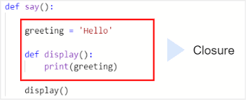
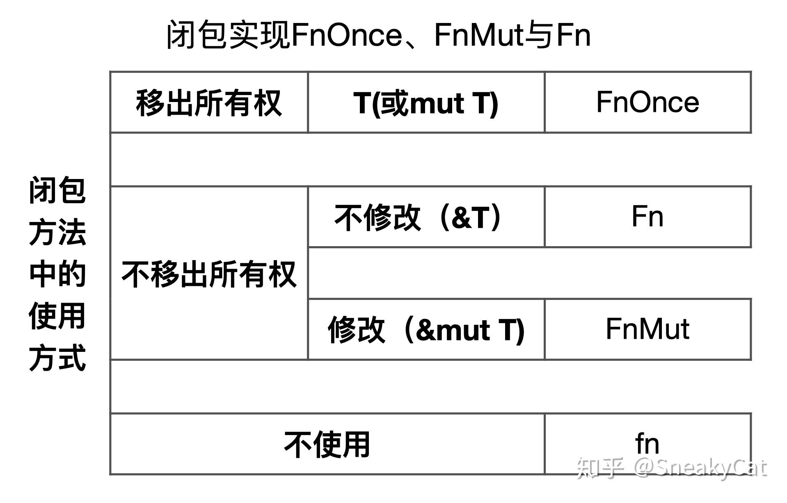

从lambda calculus到闭包(closure)
lambda演算是Alonzo Church在1935年设计的计算模型，与Turing是同时代的。他们提出了非常不同的计算模型。
Turing证明了两者在计算能力上是等效的,它们都可以有效的模仿另一个,是等效的计算模型.
lambda演算非常特别,因为它由仅由函数和这些函数的参数组成的表达式组成
lambda演算
λx. y 定义参数 x 并返回值 y 的函数
(λx. x) 这是一个恒等函数. 其中λx表示参数, x表示函数的返回值
((λx. x) 2) = 2
有两个参数x ,y的情况
((λx. λy. x+y) 2 3) = 5
((λx. (x x)) (λx. (x x))) = ((λx. (x x)) (λx. (x x))) = ((λx. (x x)) (λx. (x x))) loop
可以传入函数作为参数. 这个例子中返回的将永远是它自己.
匿名函数
匿名函数又称lambda函数, lambda抽象, lambda表达式,建立在lambda演算基础上.
python中lambda函数例子:
>>> foo = lambda x: x * x
>>> foo(10)
100
rust中的lambda函数
#![allow(unused)] fn main() { let adder = |a, b| a + b; }
闭包(Closure)
闭包(Closure)，函数闭包(function closures)又称词法闭包(Lexical Closure)
下面提供多种解释来帮助理解闭包:
在rust book中闭包定义: 可以捕获环境的匿名函数
闭包也可称为引用了自由变量的函数. 这个被引用的自由变量将和这个函数一同存在，即使已经离开了创造它的环境也不例外.
闭包是由函数和与其相关的引用环境组合而成的实体
闭包就是一个捕获了当前上下文变量的结构体(外加一段代码 lambda function)
直接理解rust中的闭包有点困难,我们先从python的例子来看
python中的闭包
例一:
一个函数内部定义另一个函数。这个函数就称为嵌套函数
在display内部, 可以通过它的局部作用域访问greeting
Python 将该greeting变量称为自由变量。
当您查看display函数时，实际上是在查看：display函数本身。以及值为'Hello'的自由变量greeting。
def say():
greeting = 'Hello'
def display():
print(greeting)
display()
例二:
say()函数返回display()函数,而不是执行它
当返回display()函数时,它也返回了闭包
def say():
greeting = 'hello'
def display():
print(greeting)
return display
fn = say()
fn()

输出:
hello
既然变量greeting是say的局部变量,出了函数体应该是不能访问greeting的, 但依旧可以看到fn()输出了hello
>>print(fn.__closure__)
(<cell at 0x0000017184915C40: str object at 0x0000017186A829B0>,)
在这个例子中，单元的内存地址是0x0000017184915C40。它引用了一个字符串对象0x0000017186A829B0
例三:
如果在say函数 和中显示字符串对象的内存地址closure，您应该会看到它们引用了内存中的同一个对象： 这时多个作用域共享同一个变量，所以外部函数和内部函数作用域中的变量greeting是相同的
def say():
greeting = 'Hello'
print(hex(id(greeting)))
def display():
print(hex(id(greeting)))
print(greeting)
return display
fn = say()
fn()
输出:
0x17186a829b0
0x17186a829b0
参考:https://www.pythontutorial.net/advanced-python/python-closures/
rust中的闭包
rust中闭包稍微复杂一些, 因为涉及到获取参数的方式, 在rust中函数获取参数的方式有三种:获取所有权，可变借用和不可变借用
Summary
闭包是函数指针(fn)和环境的组合
闭包不捕获任何环境中变量是一个函数指针。
闭包的方法移出了所捕获的变量的所有权，则会实现FnOnce(self)
闭包的方法没有移出所捕获的变量的所有权，并且对变量进行了修改，即通过可变借用使用所捕获的变量，则会实现FnMut(&mut self)
闭包的方法没有移出所捕获的变量的所有权，并且没有对变量进行修改，即通过不可变借用使用所捕获的变量，则会实现Fn(&self)
如果你希望强制闭包获取其使用的环境值的所有权，可以在参数列表前使用 move 关键字。这个技巧在将闭包传递给新线程以便将数据移动到新线程中时最为实用。

例
#![allow(unused)] #![feature(unboxed_closures, fn_traits)] fn main() { //定义闭包结构体 struct Say { //捕获的环境变量 s: String, } //实现FnOnce方法 impl FnOnce<()> for Say { type Output = (); extern "rust-call" fn call_once(self, args: ()) -> () { println!("{}", self.s); } } //实现FnMut方法 impl FnMut<()> for Say { extern "rust-call" fn call_mut(&mut self, args: ()) -> () { self.s.push_str(" world!"); println!("{}", self.s); } } //实现Fn方法 impl Fn<()> for Say { extern "rust-call" fn call(&self, args: ()) -> () { println!("{}", self.s); } } }
fn main() { let mut greeting = "hello".to_string(); //闭包say捕获环境变量greeting let mut say = Say { s: greeting}; //不修改环境变量 不捕获所有权 say.call(()); //修改环境变量, 不捕获所有权 say.call_mut(()); //移除所有权 say.call_once(()); //之后再调用call call_mut call_once就会报错 }
在了解了rust闭包内部实现之后,再看一些例子
#![allow(unused)] fn main() { //实现了call. 不修改环境变量,不捕获所有权,可多次调用say,但不能修改greeting let greeting = "hello"; let say = || { println!("{}", greeting); }; say(); //实现了call_mut,修改环境变量,不捕获所有权,可多次调用say,可修改greeting let mut greeting = "hello".to_string(); let mut say = || { greeting.push_str(" world"); println!("{}", greeting); }; say(); //实现了call_once,修改环境变量(也可以不修改),捕获所有权,只能调用一次say let mut greeting = "hello".to_string(); let mut say = move || { greeting.push_str(" world"); println!("{}", greeting); }; say(); }
图片来源于Rust中的闭包与关键字move